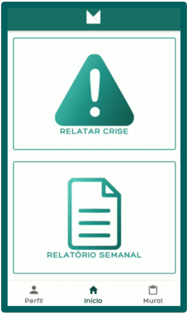
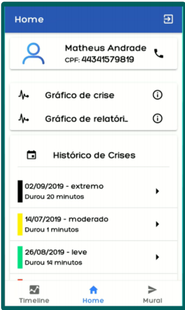
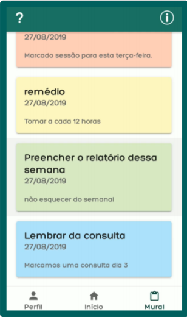

Nessa tela, temos a página central do aplicativo Müd na qual são apresentados ao paciente os dois tipos de relatório que ele deve prencher,
que são o semanal e o de crises.

Na página ao lado temos o aplicativo Mud profissional na sua tela principal, onde são exibidos os relatórios de crise e semanal ao profissional,
através de Timelines e gráficos.

O software mud oferece um mural de mensagens do psicólogo para o paciente, a partir do app do profissional é
possível enviar e apagar os murais que chegam até o paciente.

Além dos aplicativos, o Müd também oferece ao profissional uma plataforma web onde é possível ter uma visualização mais detalhada dos gráficos de informações de cada paciente.